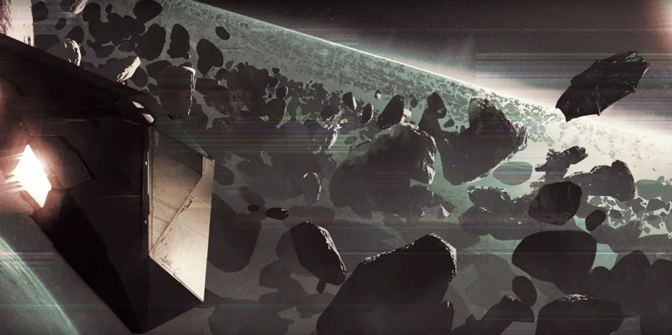
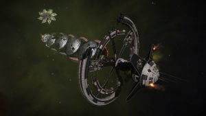
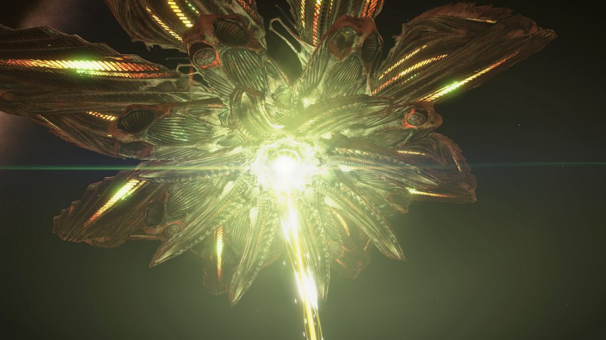
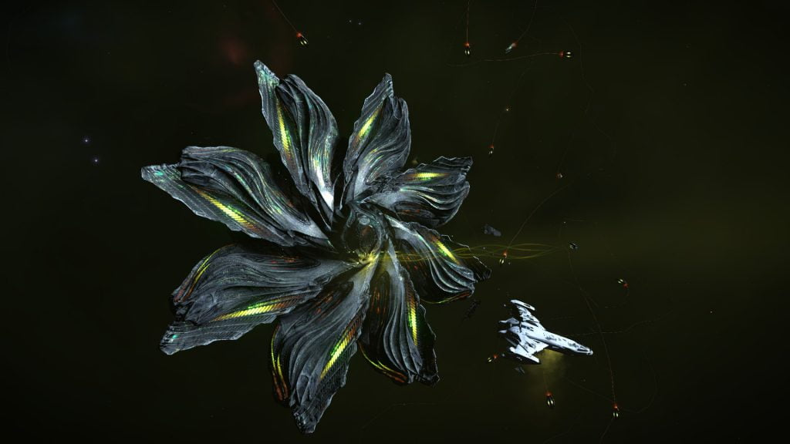
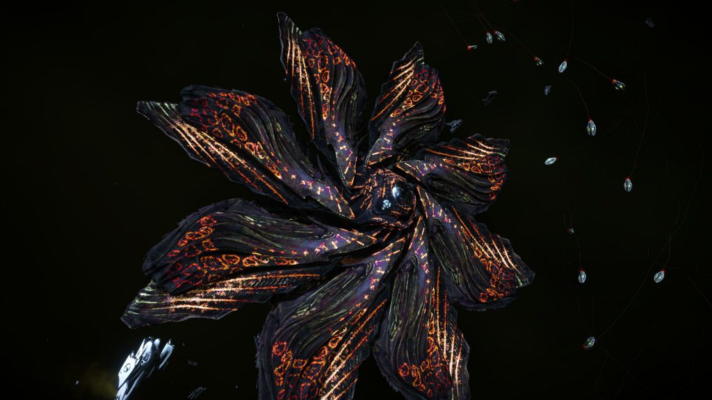
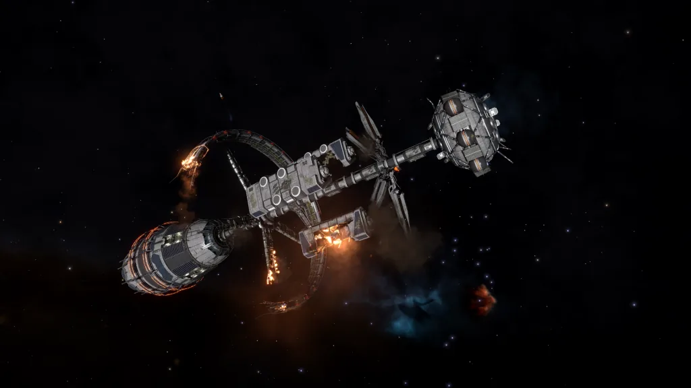
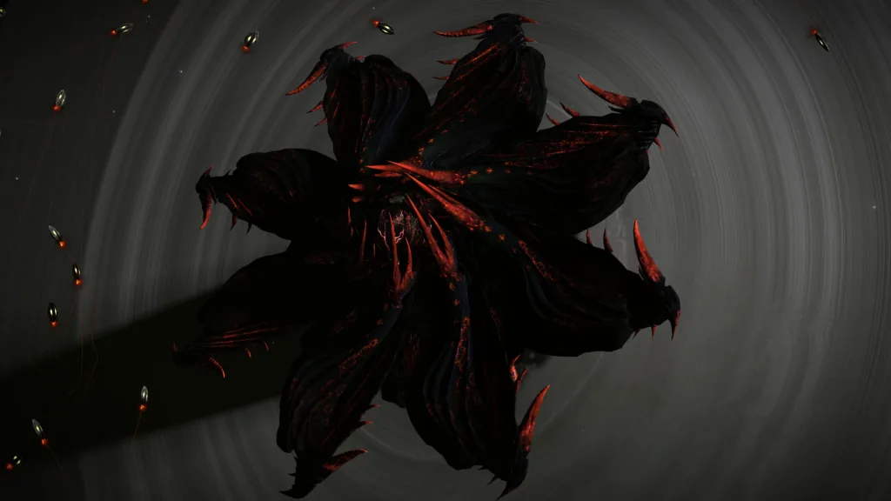
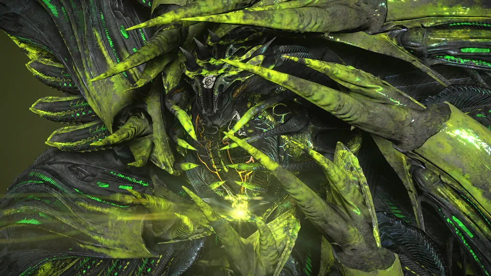
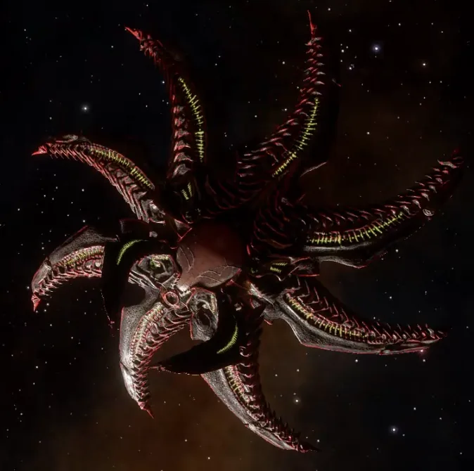
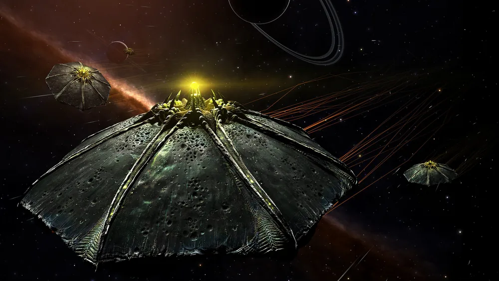

The Thargoid Ship is an alien vessel of confirmed origin. Examples of this alien ship were first encountered on January 5, 3303; Commanders were interdicted by Thargoid Ships while travelling through hyperspace and pulled into deep space with their systems disabled by an EMP burst, after which they were scanned and the Thargoid Ships jumped away.
Video by ObsidianAnt on the Live encounters
We are learning more about the Thargoids through each encounter, but so far we have encountered 4 (technically 5, more on that later) different variants of Thargoid Interceptors, and 4 variants of the Thargoid Scout class. The 4 main Interceptor variants are as follows: Cyclops, Basilisks, Medusas, and Hydra. Each contain properties that make them unique and easily identifiable, and each with an increasing level of lethality. The 5th variant has currently only been seen visiting certain ground locations and has since disappeared for unknown reasons, this 5th variant was known as ‘Orthorus’ and shared visual similarities to that of the Cyclops variant.
To understand more about Thargoids as a whole, we have to know a little bit about their history.
Officially, the first encounters with Thargoids occurred around an ammonia-based world in 3125. Accounts surfaced from independent pilots who claimed that they had been pulled out of hyperspace and attacked by agile, octagonal starships of unknown design and origin. Those who survived the experience were convinced they had encountered an alien species, and named the aliens “Thargoids”.
The events surrounding the first contact with the Thargoids were mostly suppressed and forgotten, and by the 3300’s the Thargoids themselves were generally regarded as fiction. According to Alliance Prime Minister Edmund Mahon, who is one of the few individuals with access to surviving records, the Intergalactic Naval Reserve Arm, or INRA, fought a war against the Thargoids and eventually secured victory by deploying a bio-weapon against the aliens (check the INRA settlement logs for more details). The Thargoids retreated, and for many years it was believed they had been driven to extinction or even never truly existed at all. Thargoids are also often referred to as organic insect-like creatures.
Over recent years Thargoids have re-appeared in several nearby nebulae – first the Pleiades, then California, Witch Head and finally the Coalsack. Non Human Signal Sources can be seen when in supercruise within a range of each nebula (the distance varies between the nebulea, and also changes over time occasionally).
Centres of the nebulae, and current radii:
There are several classes of Thargoid – and within those classes there are distinct variants. The classes are:
Thargoids can all Interdict you during a Hyperspace transition across and outside these nebulae ( Believed to be influenced by carrying Thargoid Objects ) This has become know as Hyperdiction. If this happens it is possible to be Hyperdicted by up to 4 Thargoids in the same instance, it will pull you out of Hyperspace and cause your ship in be inoperable while the ships scan you (unless you use the experimental anti-EMP device). These hyperdictions are not aggressive in nebulae, in that the Thargoids will disable you and scan you, but then will leave unless they find certain cargos.
In 3308 the second Thargoid War started as eight ‘Stargoids’ were found that moved from the outer reached of the galaxy towards the bubble. On reaching the bubble they became known as Thargoid Maelstrom and formed the centres of Thargoid attacks on humanity.
Since the second Thargoid War started in 3308 Thargoids have started interdicting pilots in supercruise in the area of their Maelstroms, as well as aggressively hyperdicting. For both cases any interceptor will immediately deploy their swarms and close to attack (though they will not attempt to use their EMP to disable ships). Scouts can also interdict / hyperdict now, and are – as ever – immediately aggressive.
There are now many types of limpet available to the intrepid commander, and these have been tested on the interceptors with some interesting results – check the report for details.

The Cyclops variant was the first variant found. It can be located within Threat 5 Non-Human Signal Sources across the Pleiades Sector (and the other Thargoid Nebulae), as well as seen at destroyed Megaships. When entered, they contain a wrecked convoy, Federal/Imperial, surrounded by a green smog. The Cyclops should be somewhere near the centre of the wreckage.

When you enter the instance the Thargoid vessel should come to scan you. If you have any Thargoid objects in your hold, such as the Thargoid Sensor or Meta Alloys it will wait a few seconds after scanning. This is your window to release them into space (jettison them) and allow the Thargoid to collect them. If you decide to keep them, the Thargoid will turn hostile towards you and will deploy 24 Thargons from its rear. Thargons are small drone-like ships that the Thargoid can use for combat purposes.
If you drop 5 or more Meta Alloys, then you have a chance to see a second Thargoid enter the instance. It will jump in, and usually deploys an EMP shutdown field which takes your ship systems offline making your ship inoperable.
Equally Cyclops, and Basilisk Variants can be seen at Barnacles, and Barnacle Forests performing some form of extraction, or thought it’s exact actions cannot be confirmed. The Thargoid vessel will appear the float down to the barnacle, before releasing an EMP burst, disabling ships in the area. It will then flip over, and activate a beam that connects with the Barnacle. Debris and any close by SRVs are lifted into the air towards the rear of the Thargoid ship. The ship after a while will stop releasing the beam, and fly away. The purpose of this demonstration is unknown but is heavily thought to be an extraction/repair process.

The Cyclops Variant also has 4 hearts, which you are required to take out in order to kill it. To be able to select these you will need a Xeno Scanner utility module. Firing on an Interceptor causes the Thargoid to immediately return fire by sending the Thargons after its attacker. While the Thargons are extremely fast and fire projectiles that penetrate shields and directly damage the hull, the Interceptor itself will also fire fast and seemingly unavoidable red projectiles. It’s believed that the max speed of these ships is around 450m/s.
After one of an Interceptor’s Thargoid Hearts are destroyed, the Interceptor will respond by unleashing a powerful secondary attack in the form of lightning-like energy beams. The attack is preceded by flashing yellow lights on the ship’s hull and has a very short range, allowing it to be avoided by skilful piloting. This weapon inflicts heat damage, drains shields, causes a random module malfunction, reboots Shield Boosters, and disrupts Thrusters.
Some Interceptors will also give chase to any CMDRs trying to flee. They may launch Caustic Missiles that will home in on their targets and explode in a cloud of caustic, hull-eating substance. Aegis Research Group have produced weapons, modules and ships capable of opposing Thargoids in combat.

The Basilisk Variant was found a few weeks after ‘the return’ of the Thargoids after a listening post in the Celaeno system was found talking about ships being attacked in the Electra system. This time, the Basilisk was found within Threat 6 Non-Human Signal Sources around Electra (within 41.3 LY of Merope) and is very similar to the Cyclops, one notable difference is its appearance as it has a metallic purple base tone followed by orange and yellow patterns on each of the ‘petals’. When entered, they contain a wrecked convoy, Federal/Imperial, surrounded by a green smog. The Basilisk should be somewhere near the centre of the wreckage.
When you enter the instance the Thargoid vessel should come to scan you, similar to the behaviour of the Cyclops, if you have any Thargoid objects in your hold, such as the Thargoid Sensor, or Meta Alloys it will wait a few seconds after scanning. This is your window to release them into space (jettison them) and allow the Thargoid to collect them. If you decide to keep them, the Thargoid will turn hostile towards you and will deploy 64 Thargons from its rear. Thargons are small drone-like ships that the Thargoid can use for combat purposes.
If you drop 5 or more Meta Alloys, then you have a chance to see a second Thargoid enter the instance. It will jump in, and usually deploys an EMP shutdown field which takes your ship systems offline making your ship inoperable.
The Basilisk Variant has 5 hearts, which you are required to take out in order to kill it. To be able to select these you will need a Xeno Scanner utility module. Firing on an Interceptor causes the Thargoid to immediately return fire by sending the Thargons after its attacker. While the Thargons are extremely fast and fire projectiles that penetrate shields and directly damage the hull, the Interceptor itself will also fire fast and seemingly unavoidable red projectiles. It’s believed that the max speed of these ships is around 450m/s.
After one of an Interceptor’s Thargoid Hearts are destroyed, the Interceptor will respond by unleashing a powerful secondary attack in the form of lightning-like energy beams. The attack is preceded by flashing yellow lights on the ship’s hull and has a very short range, allowing it to be avoided by skilful piloting. This weapon inflicts heat damage, drains shields, causes a random module malfunction, reboots Shield Boosters, and disrupts Thrusters.
However Basilisk Variant Interceptors display an additional defensive behaviour. After a Basilisk Variant loses a Thargoid Heart, if another Heart is not destroyed within seven minutes, the ship will enter an “enraged” state that dramatically increases its lethality. It will instantly respawn its Thargon Swarms, increase the frequency of its Caustic Missile attacks, and fire more Caustic Missiles in each volley.

The Medusa Variant was first found, after stations in the Pleiades were attacked. First, and most notably the Oracle. After Galnet published the following on 15 DEC 3303:
Recent reports indicate that several starports in the Pleiades have been attacked by Thargoids. The attacks have resulted in significant damage and hundreds – possibly thousands – of deaths. Galactic authorities have confirmed that the affected starports are Titan’s Daughter in the Taygeta system, Liman Legacy in HIP 16753 and the Oracle in the Pleiades Sector IR-W D1-55.
It is understood that the attacks were executed by a previously unseen class of Thargoid craft classified as an Interceptor Medusa. Footage from starport security feeds indicate that the Thargoid ships used their shutdown fields to neutralise station defences before targeting the main reactor.
One eyewitness said, “It’s like they wanted to cripple us rather than destroy us outright”.
Authorities in the affected systems have responded with appeals for foods, water, basic medicines and natural fabrics. They have also implored independent pilots to support relief operations by evacuating civilians from the starports.

The stations that have been attacked are extremely hard to land. They will go into an emergency state, and only authorized emergency landings can take place for Commanders to rescue trapped inhabitants. Entering a station in this state is dangerous, you will gain heat extremely fast which may cause internal damage to modules, malfunctions, and hull damage. Explosions from surroundings may push you back, and you may crash into floating debris.
Following this, Medusa Variants can be found within Threat 7 Non-Human Signal Sources within 34.0 LY from Merope. They are very different in appearance to the other variants. For a start, it consists of black and red textures giving it a chilling, and demonic feel. It is also considerably more ‘spiky’ in appearance. With the central eye have several inward bound spikes which bears a close resemblance to the Unknown Structures that are all around the Pleiades. It has several points around its ‘petals’ which add to the overall appearance.
When the signal source is entered, they contain a wrecked Federal/Imperial convoy surrounded by a green smog. The Medusa should be somewhere near the centre of the wreckage.
When you enter the Thargoid vessel should come to scan you, if you have any Thargoid objects in your hold, such as the Thargoid Sensor or Meta Alloys it will wait a few seconds after scanning. This is your window to release them into space (jettison them) and allow the Thargoid to collect them. If you persist on keeping them, the Thargoid will turn hostile and will deploy 96, yes you read right, 96 Thargons from its rear. Thargons are small drone-like ships that the Thargoid can use in combat.
If you drop 5 or more Meta Alloys, then you have a chance to see a second Thargoid enter the instance. It will jump in, and usually deploys an EMP shutdown field which takes your ship systems offline making your ship inoperable.
The Medusa Variant has 6 hearts, which you are required to take out in order to kill it. To be able to select these you will need a Xeno Scanner utility module. Firing on an Interceptor causes the Thargoid to immediately return fire by sending the Thargons after its attacker. While the Thargons are extremely fast and fire projectiles that penetrate shields and directly damage the hull, the Interceptor itself will also fire fast and seemingly unavoidable red projectiles. It’s believed that the max speed of these ships is around 450m/s.
After one of an Interceptor’s Thargoid Hearts are destroyed, the Interceptor will respond by unleashing a powerful secondary attack in the form of lightning-like energy beams. The attack is preceded by flashing red light lasers unlike the previously seen yellow on the ship’s hull and has a very short range, allowing it to be avoided by skilful piloting. This weapon inflicts heat damage, drains shields, causes a random module malfunction, reboots Shield Boosters, and disrupts Thrusters.
From reports, the Medusa shares the same additional defensive behaviour as the Basilisk. After a Medusa Variant loses a Thargoid Heart, if another Heart is not destroyed within seven minutes, the ship will enter an “enraged” state that dramatically increases its lethality. It will instantly respawn its Thargon Swarms, increase the frequency of its Caustic Missile attacks, and fire more Caustic Missiles in each volley.

This is a tougher Interceptor variant than the previously seen Medusa. It was first seen around the time of the aborted Gnosis trip to the Cone Sector in September 3304. Several were seen around the human bubble, but then a large concentration were attributed with the failure of The Gnosis jump into the Cone Sector in Galnet on 7 SEP 3304.
Hydra can usually be found in Non-Human Signal Sources with threat levels of 8 or above. If they are found alone they will not be aggressive (dependant on CMDR’s actions), but if they are found with Scouts they are invariable aggressive. They have 8 hearts and are protected by a swarm of a whopping 128 Thargons, and feature more powerful weaponry and attacks than the Medusa. It is advised to tackle this vessel with other CMDRs or a skilled pilot with heavy Guardian weaponry and engineering.

This is an Interceptor variant about which little is known. It was first reported by CMDR Hastur near Professor Palin’s abandoned research facility on Maia A 3 A in late August 3305, and was first scanned by CMDRs Aranionros Stormrage & Blake of AXI. When encountered it will run at speed and jump out above the base – often accompanied by a swarm of Scouts.
It was found more commonly in the game once the second Thargoid War started in 3308. It can be found in Non Human Signal Sources with Threat Level 4 and the ‘Salvage’ symbol in systems around Thargoid Maelstroms in the ‘Thargoid Alert’ state. There appear to be two scenarios when the signal source is entered:
Orthrus will not fight back if attacked, they will run. They have a caustic cloud that will attack ship hulls and will damage most guardian modules (including weapons) which will quickly become inoperable. They will also call on other Thargoids to protect them.
These are a new “Hunter” class Thargoid first found in May 3309 once the centre of the Maelstrom was reached. The variant named “Glaive” is an unbelievably capable roughly scout sized ship that apparently have been designed recently with the express purpose of combating modern anti-xeno war tactics. They are a purebred war machine and have not been observed doing much except fighting. Its appearance is very thin and sharp in nature, presumably because it is so nimble and aggressive. It has long flowing tendrils coming out its back and has many spines on its rear-4 thin, blade-like petals. It has 8 petals total, 2 sets of 4 and the front 4 are larger like usual. Visually it shares very little in common with all Thargoid constructs to date save the presence of 2 sets of petals and the rear soft-rather-than-hard tendrils. It retains front “signalling” lights and a glassy cockpit. Thanks to Commander Mallchad for the write up and Commander Firehawk894 for the picture.
Hunter class ships are very aggressive and every possible precaution should be taken when travelling through spaces expected to contain Glaives.

The Scythe is a Hunter class Thargoid specifically interested in humans. It is known to Hyperdict and Interdict ships around Maelstrom (out to at least 50 Ly). It will then attempt to take any occupied escape pods, slaves or even passengers that it finds on board. It is also found inside Maelstrom. It can appear on its own in Human systems, or accompanied by Scouts and Interceptors in Thargoid controlled systems. It has similar combat capabilities to the Glaive.

This is a Scout class ship, smaller than the interceptors, and they tend to come in groups. They look closely related to the original Thargoid ships from previous games, and tissue samples indicate they are older then than the Interceptors. Several crashed scouts have been found.
Marauders are much easier to kill than the Interceptor variants, though need different tactics as they appear in multiples and are much more manoeuvrable. They can be found in small numbers in Non-Human Signal Source (NHSS) Threat 3, in larger groups in NHSS Threat 4 (along with NPC ships that will help distract the Marauders from attacking you). They also appear in NHSS Threat 8 – in this case, there will be a group of Marauders initially and expect an Interceptor variant to drop in after the fight has started – it will attempt to disable you so an Anti-EMP device is useful.
This is a Scout class ship, first seen in June 3304. These Scout variants can be found alongside side Marauder variants depending on the Non-Human Signal Source threat level. Berzerkers are more dangerous than the Marauder variants as they have a higher damage output, and in its default state can release a pulse which can increase the damage output of other nearby Scouts. The method of killing is very similar to that of a Marauder.
This is a Scout class ship, first seen in June 3304. These Scout variants can be found alongside side Marauder variants depending on the Non-Human Signal Source threat level. Regenerators as the name suggests, have the ability to release a pulse that heals other nearby Scouts. The method of killing is very similar to that of a Marauder.
This is a Scout class ship, first seen in June 3304. These Scout variants can be found alongside side Marauder variants depending on the Non-Human Signal Source threat level. Inciters have the ability to drastically buff the performance of other Scouts in the instance. They can release a white pulse which will buff other Scouts damage (stacks with berzerker rage state) and causes other Scouts to synchronize their attacks, much like the Thargon swarm released by the Interceptor. This pulse also makes the Scouts more manoeuvrable and have a slight increase in speed. The method of killing is very similar to that of a Marauder.


Revenants are the smallest known Thargoid ships and are the Thargoid equivalent of a Sentry Skimmer. They can be encountered at abandoned settlements in Thargoid controlled systems around the Maelstroms and were first seen in May 3309.
The current behavior of a Revenant can be determined by checking the color of its search light. Initially, it is green, indicating that the Revenant is peaceful and hasn’t found any hostile targets. When it encounters a target, the search light color switches to red and it will attack the target with a long range green laser. The damage potential of that laser is not to be underestimated, given its capability to completely deplete a Dominator suit’s shield in under three and a Scorpion’s shield in under 20 seconds.
The Revenant will occasionally fire ballistic mines at its target. For that, its search light colour will switch to yellow until it determines that it can fire a mine at its target. These mines cannot be targeted and will stick to the surface they landed on; eventually detonating after about three seconds. While a Revenant is in its mine firing behaviour (yellow search light), it will not react to received damage, although it will immediately attack a different target if one is in sight.
If enough Revenants are killed, a Scout will drop in over the settlement, lower down and emit a green cone for a short time, after which it will deploy multiple new Revenants. Those newly spawned Revenants are initially docile, only becoming hostile after finding a target instead of assuming the hostility status of already existing Revenants.
While Revenants possess no shields and are easily taken out with 3-4 shots from a Manticore Executioner or one Aculeus missile from a Scorpion, its high damage potential and group appearance means that one should avoid meeting even one of them in open field and instead adapt a Guerilla-style approach which makes use of the various buildings in an abandoned settlement for undetected travel and hiding. Extra caution should be exercised when approaching the settlement, as they will quickly deal a fair amount of damage to ships, SRVs and commanders alike. A Scorpion SRV can be quite effective in killing Revenants, being able to take one out with one missile, however the low magazine size does not fair well against an enemy that will be redeployed over and over again.
While one might think that ship weaponry would quickly dispose of any Revenants, they are invisible to ship targeting systems. In a similar manner, SRVs won’t be fired on by Scouts that deploy new Revenants, although ships will. The easiest way to deal with them is therefore to quickly take them out with handheld weapons that deal large amounts of hull damage with the lowest time on target needed, like the Manticore Executioner, do whatever you need to in that settlement, and then take out more Revenants to use the small time window before redeployment to escape.

Banshees are a larger ground vessel that is the Thargoid equivalent of a Goliath skimmer. Several can be found at Thargoid Spire sites, while military-economy Odyssey settlements under Thargoid control may include a Banshee that appears alongside Revenants.
The Banshee has similar behavior to the Revenant that can be observed by watching its searchlights, though it has 4 such lights that point in different directions. Like the Revenant, it can detect SRVs and ships at a considerable distance.
Banshees have 4 weapons:
Unlike Revenants, Banshees do not appear to have any redeployment or respawn mechanism at this time.
The Banshee has very heavy armor and can take a surprising amount of fire from ship weapons fired from above. It has 3 bulbs on the bottom that are particularly vulnerable to damage. A Scorpion SRV can destroy a Banshee in about a minute as long as it can get a clear shot at it from below. An on-foot commander can easily avoid fire from the Banshee by staying below it (though care must be taken to jump out of range of ballistic mine volleys), but will take half or more of the total ammo carried to kill with a rocket launcher or plasma weapon. The heavy armor makes it difficult to kill directly in a ship, but volleys of AX missiles can easily destroy it by exploding directly beneath it, where the splash damage can reach its vulnerable spots and point defense can be overwhelmed.
Banshees typically appear with Revenants, and most of the difficulty in destroying a Banshee on foot or in an SRV is due to the presence of Revenant fire preventing the commander from maintaining a good position to fire on the Banshee.
Destroying a Banshee currently gives a combat bond of 1,000,000 credits.